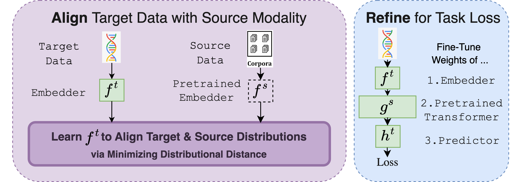
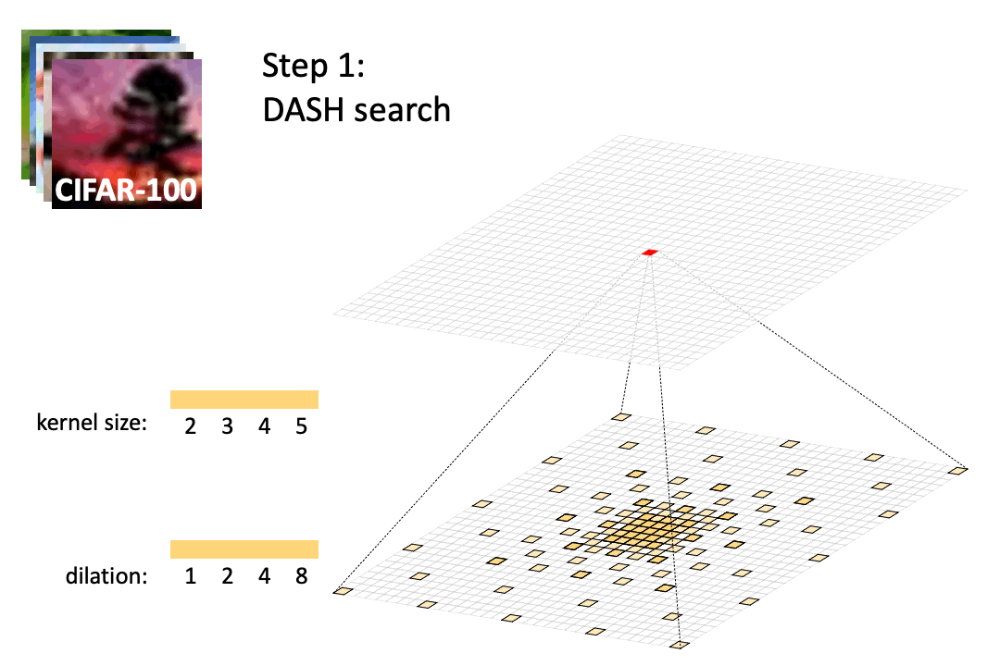
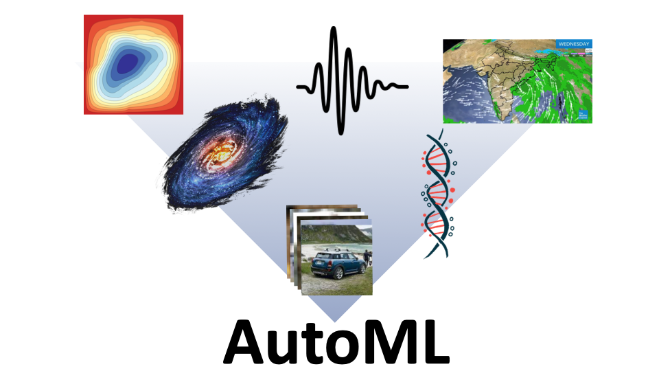
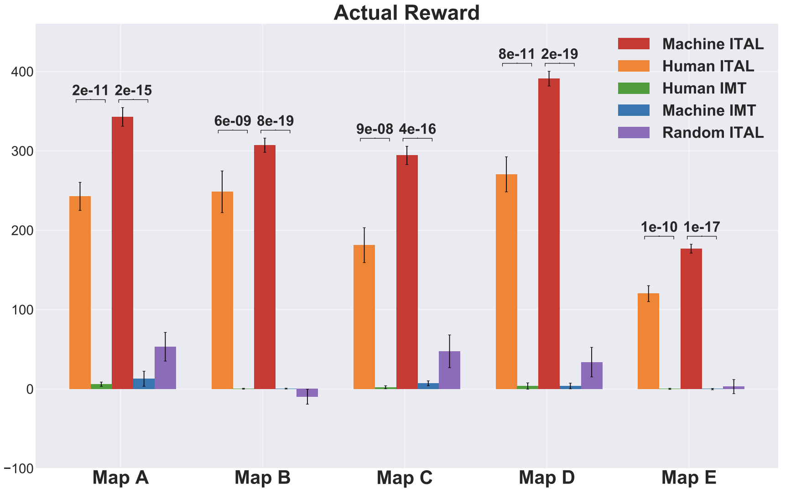
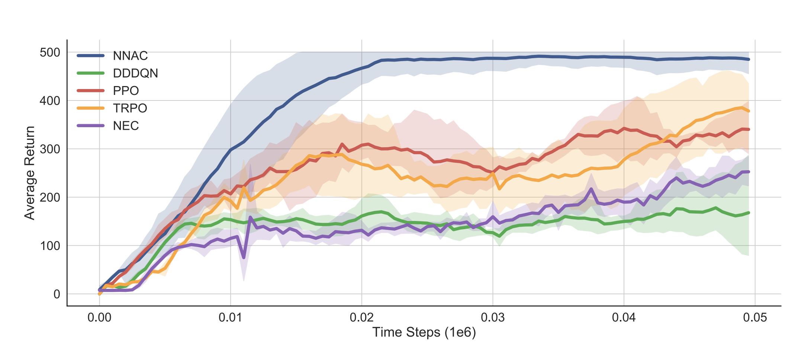
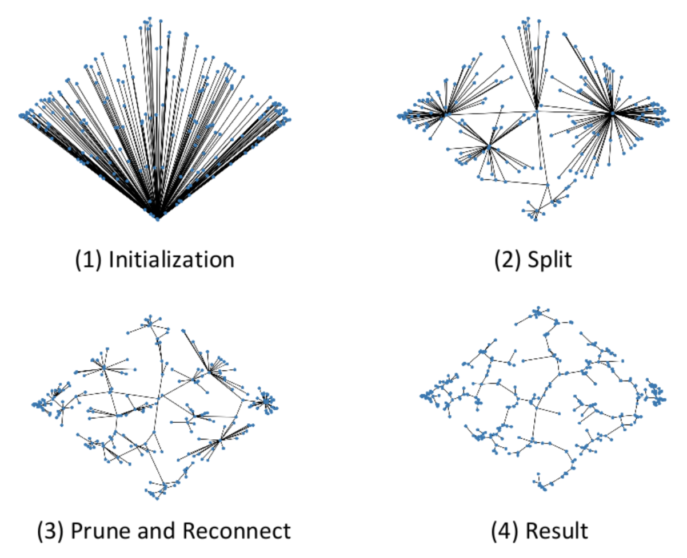
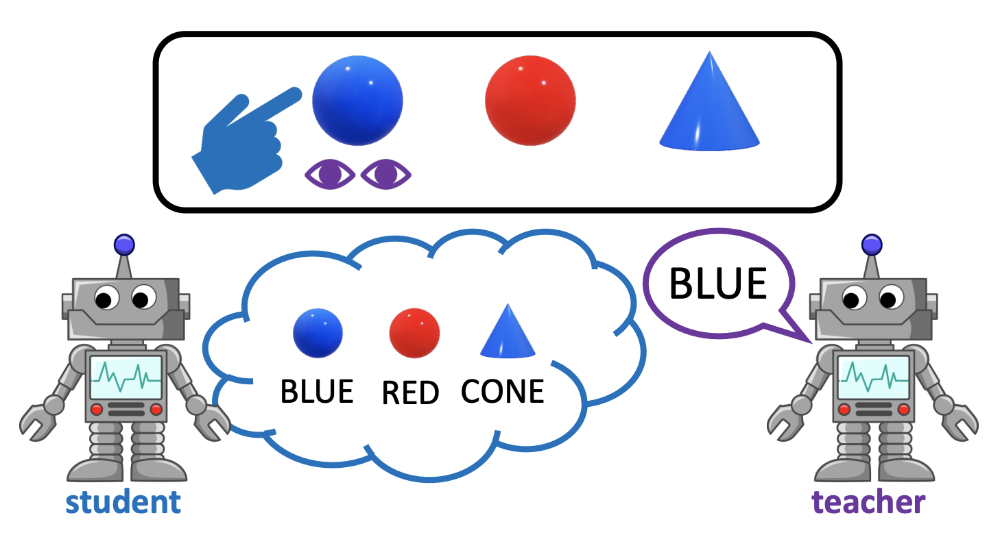

Resarch
I’m interested in machine learning and deep learning in general. My current research focuses mainly on the practical side of ML, i.e., developing effective ML tools and pipelines for diverse applications in real life. I approach this problem from the following aspects:
-
Automated machine learning (AutoML): I study neural architecture search (NAS) to generate effective and task-specific neural network architectures for different downstream problems.
-
Tranfer learning with pretrained models: how can we leverage existing large-scale pretrained models effectvely for solving problems that are not within the model’s pretraining domain and modality?
Talks
- Cross-Modal Fine-Tuning, AI4Science Talks, March 20, 2023.
- DASH: How to Search Over Convolutions, The AutoML Podcast, December 19, 2022.
- Tackling Diverse Tasks with Neural Architecture Search, Deep Learning Machine Learning Journal Club, Mayo Clinic, October 17, 2022.
Publications

Junhong Shen,
Liam Li, Lucio Dery, Corey Staten, Mikhail Khodak, Graham Neubig,
Ameet Talwalkar
Cross-Modal Fine-Tuning: Align then Refine
Cross-Modal Fine-Tuning: Align then Refine
In
ICML,
2023 (Oral).
ORCA is a general cross-modal fine-tuning framework that extends the applicability of a single large-scale pretrained model to diverse modalities. It adapts to a target task via an align-then-refine workflow. Given the target input, ORCA first learns an embedding network that aligns the embedded feature distribution with the pretraining modality. The pretrained model is then fine-tuned on the embedded data to exploit the knowledge shared across modalities.

Junhong Shen*,
Mikhail Khodak*,
Ameet Talwalkar
Efficient Architecture Search for Diverse Tasks
Efficient Architecture Search for Diverse Tasks
In
NeurIPS,
2022.
DASH is developed for efficiently solving diverse ML problems outside of the well-researched domains such as vision and natural language processing. Being fast, simple, and broadly applicable, DASH fixes a standard CNN topology and searches for the right kernel sizes and dilation rates that its operations should take on. It expands the network capacity to extract features at multiple resolutions for different types of data while only requiring searching over the operation space.

Renbo Tu*,
Nicholas Roberts*,
Mikhail Khodak,
Junhong Shen,
Frederic Sala,
Ameet Talwalkar
NAS-Bench-360: Benchmarking Neural Architecture Search on Diverse Tasks
NAS-Bench-360: Benchmarking Neural Architecture Search on Diverse Tasks
In
NeurIPS Datasets and Benchmarks Track,
2022.
Neural architecture search (NAS) benchmarks and methods prioritize performance on well-studied tasks, e.g., image classification on CIFAR and ImageNet. To mitigate this bias, NAS-Bench-360 is a benchmark suite for evaluating state-of-the-art NAS methods on a diverse set of tasks. The selection spans different application domains, dataset sizes, problem dimensionalities, and learning objectives.

Luyao Yuan,
Dongruo Zhou,
Junhong Shen,
Jingdong Gao, Jeffrey L. Chen, Quanquan Gu, Ying Nian Wu,
Song-Chun Zhu
Iterative Teacher-Aware Learning
Iterative Teacher-Aware Learning
In
NeurIPS,
2021.
In this paper, we propose a gradient optimization based teacher-aware learner who can incorporate teacher’s cooperative intention into the likelihood function and learn provably faster compared with the naive learning algorithms used in previous machine teaching works.

Junhong Shen,
Lin F. Yang
Theoretically Principled Deep RL Acceleration via Nearest Neighbor Function Approximation
Theoretically Principled Deep RL Acceleration via Nearest Neighbor Function Approximation
In
AAAI,
2021.
We propose a theoretically principled nearest neighbor (NN) function approximator that can replace the value networks in deep RL methods. Inspired by human similarity judgments, the NN approximator estimates the action values using rollouts on past observations and can provably obtain a small regret bound that depends only on the intrinsic complexity of the environment.

Junhong Shen,
Abdul Hannan Faruqi, Yifan Jiang,
Nima Maftoon
Mathematical Reconstruction of Patient-Specific Vascular Networks Based on Clinical Images and Global Optimization
Mathematical Reconstruction of Patient-Specific Vascular Networks Based on Clinical Images and Global Optimization
In
IEEE Access,
2021.
We developed a computational framework that takes 3D medical images as input and reconstructs complete, patient-specific vascular network models using a mathematical optimization procedure. Our framework extracts major vessels from the images and uses the organ geometry to select vessel termination points. Then, it generates the remainder network based on physiological optimality principles.

Luyao Yuan,
Zipeng Fu, Jingyue Shen, Lu Xu,
Junhong Shen,
Song-Chun Zhu
Emergence of Pragmatics from Referential Game between Theory of Mind Agents
Emergence of Pragmatics from Referential Game between Theory of Mind Agents
In
Emergent Communication Workshop, NeurIPS,
2019.
We integrate the theory of mind (ToM) in a cooperative multi-agent pedagogical situation and propose an adaptive reinforcement learning (RL) algorithm to develop a communication protocol.
Cite Cross-Modal Fine-Tuning: Align then Refine
@misc{shen2023orca,
author = {Shen, Junhong and Li, Liam and Dery, Lucio M. and Staten, Corey and Khodak, Mikhail and Neubig, Graham and Talwalkar, Ameet},
title = {Cross-Modal Fine-Tuning: Align then Refine},
publisher = {arXiv},
year = {2023},
url = {https://arxiv.org/abs/2302.05738}
}Cite Efficient Architecture Search for Diverse Tasks
@inproceedings{shen2022efficient,
title={Efficient Architecture Search for Diverse Tasks},
author={Shen, Junhong and Khodak, Mikhail and Talwalkar, Ameet},
booktitle={Advances in Neural Information Processing Systems (NeurIPS)},
year={2022}
}Cite NAS-Bench-360: Benchmarking Neural Architecture Search on Diverse Tasks
@inproceedings{nasbench360,
title={NAS-Bench-360: Benchmarking Neural Architecture Search on Diverse Tasks},
author={Renbo Tu and Nicholas Roberts and Mikhail Khodak and Junhong Shen and Frederic Sala and Ameet Talwalkar},
booktitle={Advances in Neural Information Processing Systems (NeurIPS) Datasets and Benchmarks Track},
year={2022}
}Cite Iterative Teacher-Aware Learning
@inproceedings{yuan2021iterative,
title={Iterative Teacher-Aware Learning},
author={Luyao Yuan and Dongruo Zhou and Junhong Shen and Jingdong Gao and Jeffrey L. Chen and Quanquan Gu and Ying Nian Wu and Song-Chun Zhu},
booktitle={Advances in Neural Information Processing Systems (NeurIPS)},
year={2021}
}Cite Theoretically Principled Deep RL Acceleration via Nearest Neighbor Function Approximation
@inproceedings{Shen2021TheoreticallyPD,
title={Theoretically Principled Deep RL Acceleration via Nearest Neighbor Function Approximation},
author={Junhong Shen and Lin F. Yang},
booktitle={AAAI},
year={2021}
}Cite Mathematical Reconstruction of Patient-Specific Vascular Networks Based on Clinical Images and Global Optimization
@article{shen2021reconstruction,
author={Shen, Junhong and Faruqi, Abdul Hannan and Jiang, Yifan and Maftoon, Nima},
journal={IEEE Access},
title={Mathematical Reconstruction of Patient-Specific Vascular Networks Based on Clinical Images and Global Optimization},
year={2021},
volume={9},
pages={20648-20661}
}Cite Emergence of Pragmatics from Referential Game between Theory of Mind Agents
@article{Yuan2020EmergenceOP,
title={Emergence of Pragmatics from Referential Game between Theory of Mind Agents},
author={Luyao Yuan and Zipeng Fu and Jingyue Shen and Lu Xu and Junhong Shen and Song-Chun Zhu},
journal={NeurIPS 2019 Workshop on Emergent Communication},
year={2019}
}